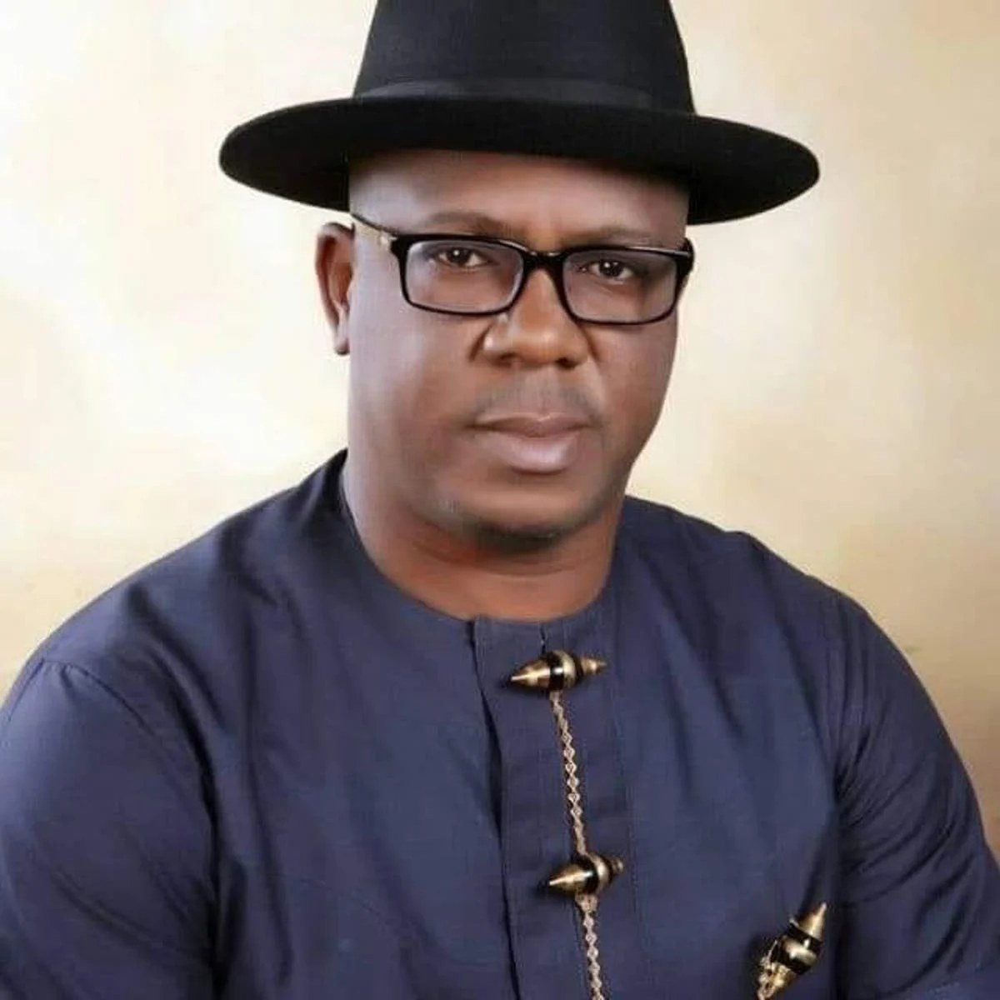

2027: Obi Nigeria’s only hope, says NDC chairman

National Democratic Congress chairman Moses Cleopas has called the party’s presidential candidate, Peter Obi, “the only hope” for Nigeria, citing worsening insecurity, economic hardship and a declining standard of living. Cleopas spoke on Saturday at a celebration of his 57th birthday in Yenagoa, Bayelsa State. NDC publicity secretary Osa Director disclosed his remarks in a statement made available to journalists in Abuja.
With the 2027 presidential election approaching, Cleopas said voters should use the contest to assess the performance of President Bola Tinubu’s administration. He argued that the decision should be based on the government’s record rather than political sentiment or party loyalty, describing the election as a referendum on whether the administration deserves another term.
Cleopas said a second-term mandate should depend on demonstrable performance, adding that voters could renew a government’s mandate if it had done well or reject it if it had not. He also urged Nigerians to examine presidential contenders’ credentials, competence and understanding of policy before deciding whom to support.
He encouraged voters to consider candidates’ records and their ability to identify the country’s challenges and propose solutions. Religious considerations and party affiliations, he said, should not outweigh those assessments.
Source: Punch